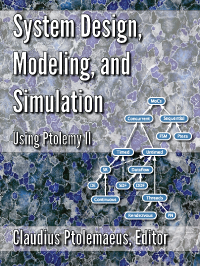

System Design, Modeling, and Simulation
|

|
Claudius Ptolemaeus, Editor, System Design, Modeling, and
Simulation Using Ptolemy II, Ptolemy.org,
Downloads
|
This book is a definitive introduction to models of computation for the design of complex, heterogeneous systems. It has a particular focus on cyber-physical systems, which integrate computing, networking, and physical dynamics. The book captures more than twenty years of experience in the Ptolemy Project at UC Berkeley, which pioneered many design, modeling, and simulation techniques that are now in widespread use. All of the methods covered in the book are realized in the open source Ptolemy II modeling framework and are available for experimentation through links provided in the book.
The book is suitable for engineers, scientists, researchers, and managers who wish to understand the rich possibilities offered by modern modeling techniques. The goal of the book is to equip the reader with a breadth of experience that will help in understanding the role that such techniques can play in design.
The techniques in this book can be applied to modeling, for example, embedded software systems, mechanical systems, electrical systems, control systems, biological systems, and - most interestingly - heterogeneous systems that combine elements from these (and other) domains.
The book emphasizes modeling techniques that have been realized in Ptolemy II. Ptolemy II is a simulation and modeling tool intended for experimenting with system design techniques, particularly those that involve combinations of different types of models. It was developed by researchers at UC Berkeley, and over the last two decades it has evolved into a complex and sophisticated tool used by researchers around the world. This book uses Ptolemy II as the basis for a broad discussion of system design, modeling, and simulation techniques for hierarchical, heterogeneous systems. But it also uses Ptolemy II to ensure that the discussions are not abstract and theoretical. All of the techniques are backed by a well designed and well tested software realization. More detailed descriptions of Ptolemy's underlying software architecture and the finer points of its operation are also described in the book.
Please cite the book as:
Claudius Ptolemaeus, Editor, System Design, Modeling, and Simulation Using Ptolemy II, Ptolemy.org, 2014.
Bibtex:
@book{ Ptolemaeus:14:SystemDesign
editor = {Claudius Ptolemaeus},
title = {System Design, Modeling, and Simulation using Ptolemy II},
publisher = {Ptolemy.org}
year = {2014},
URL = {http://ptolemy.org/books/Systems}
}
The chapters may be cited using the following template:
@incollection{
LeeEtAl:14:Dataflow,
Author = {Edward A. Lee and Stephen Neuendorffer and Gang Zhou},
Title = {Dataflow},
BookTitle = {System Design, Modeling, and Simulation using {Ptolemy II}},
Editor = {Claudius Ptolemaeus},
Publisher = {Ptolemy.org},
Year = {2014},
URL = {http://ptolemy.eecs.berkeley.edu/books/Systems/chapters/Dataflow.pdf}
}

System Design, Modeling, and Simulation
by
The Ptolemy Project, University of California, Berkeley
is licensed under a
Creative Commons Attribution-ShareAlike 3.0 Unported License.
Permissions beyond the scope of this license may be available
at
http://ptolemy.org/~eal.